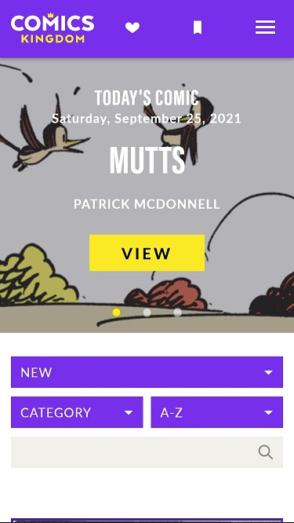
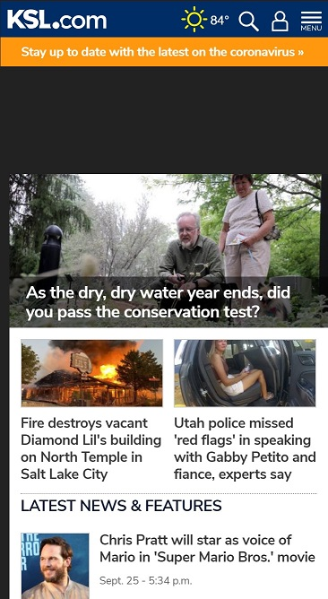

Design Principles Document
Becca Best
Hick's Law
Comics Kingdom There are thousands of comics out there and people usually only read a few. This website uses Hick’s law by only presenting a few choices with the three yellow dots that occasionally scroll for you. Gives you a few options to choose from, maybe a comic you hadn’t thought of before or wanted to read anyway. Then, there’s the easier to access filters right under that to easily find comics instead of drowning in a sea of choices.
Proximity
KSL KSL uses the principle of proximity to clearly distinguish which titles belong to which picture. This makes it clear that they’re separate articles. The title is either right on top, beside or underneath the picture. The headlines do not spill anywhere else that would make the user question or get confused.
Visual Hierarchy
Cyprus Credit UnionVisual hierarchy is used very well on Cyprus Credit Union’s website. The very top is the company logo, so you know you’re in the right place. Right below are important icons like the login and phone button. Right beneath is the routing number, which people often search for when they need to make a transaction. Then the least pertinent information, advertisements that you probably didn’t come there for, take up the rest of the page and are lower in hierarchy.